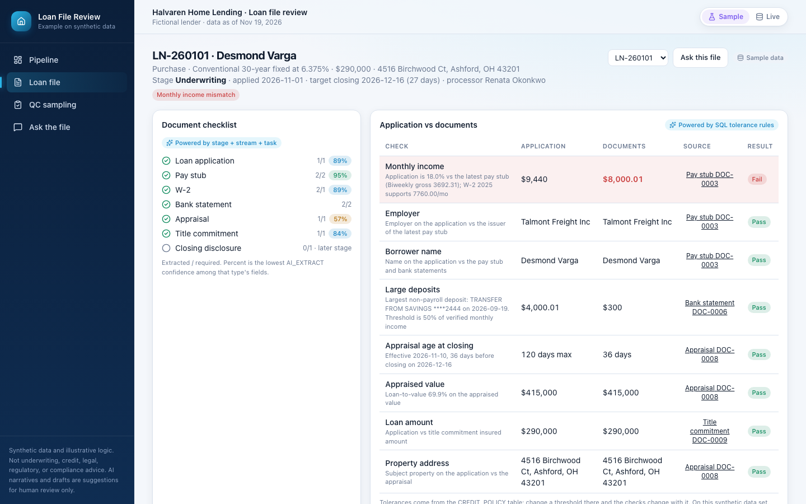
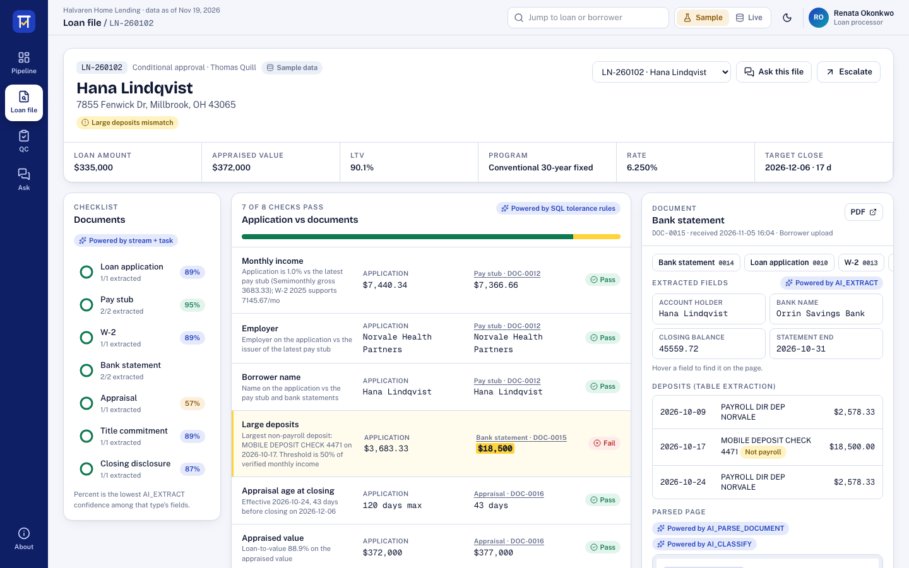
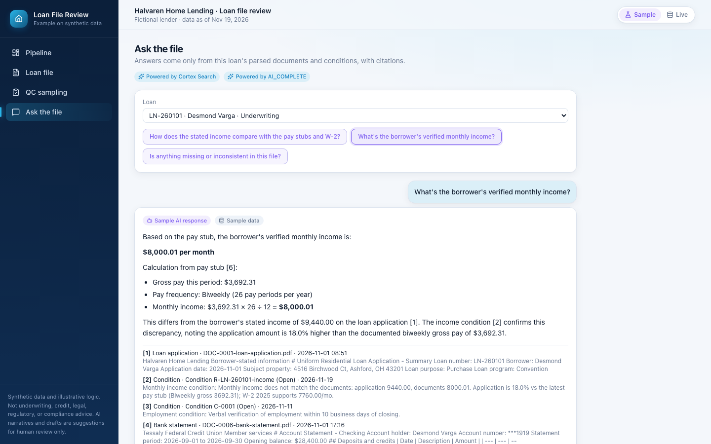
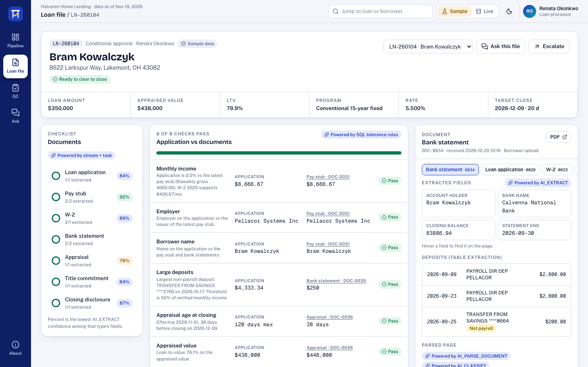
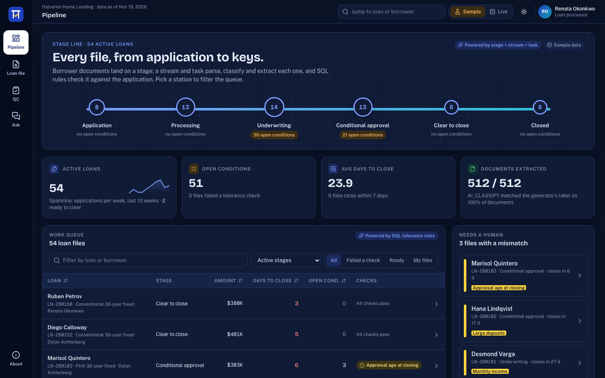

Every loan file checked against its application, mismatches first.
A mortgage file arrives as a stack of PDFs. Processors read each one, compare it with what the borrower stated, chase what doesn't match and clear conditions before closing. This example reads every document as it lands, extracts the fields with Cortex AI, checks them against the application with tolerance rules, and highlights each mismatch beside the page it came from. The processor decides what happens next.
The problem is the comparison, not the reading.
Eight facts have to agree across an application and up to ten documents: income, employer, borrower name, deposits, appraisal age and value, loan amount and property address. When one doesn't, someone has to notice, find the source, and decide. Lintora does the noticing and shows the source; people do the deciding.
Synthetic data, illustrative logic. Lintora, Halvaren Home Lending, and every borrower, employer, bank, appraiser and title company are fictional. This is not underwriting, credit, legal, regulatory or compliance advice, and it isn't a production system. Tolerances are illustrative, and AI drafts and narratives are suggestions for a person to review.
Who it's for
Loan processors
A stage line of every file, open conditions and days to close, and a loan file that shows what's missing, what doesn't match, and where each number came from.
Underwriters
Escalated files with application and document values side by side, and questions about the file answered with citations.
QC reviewers
A pre-closing sample with the same checks, findings by type against twelve months of post-closing QC, and an AI QC narrative per loan.
Walkthrough
Screenshots of the app in no-account mode. Its data and AI text were captured from the live pipeline on the same synthetic documents; the four story loans are planted on this synthetic data set.








How it works
Each capability below ran in Live mode on a Snowflake account in AWS US East 1 in November 2026.
| Step | Snowflake capability | What it does here |
|---|---|---|
| Intake | Stage, directory table, stream and task | New files on the stage are queued by a stream; a task calls one procedure whenever the stream has data. |
| Read | AI_PARSE_DOCUMENT | OCR and layout for every PDF, including the pay stub and bank statement tables. |
| Classify | AI_CLASSIFY | Names the document type. It agreed with the generator's label on all 512 documents in our runs. |
| Extract | AI_EXTRACT | Pulls the fields for seven document types with a confidence score per field, and the deposits table from bank statements. |
| Verify | SQL views and a CREDIT_POLICY table | Eight application-vs-document checks. Failures open a condition; a condition is withdrawn if its check stops failing. |
| Narratives and messages | AI_COMPLETE | Writes a QC narrative per loan from its fact sheet, and drafts a borrower request for any open condition. |
| Ask the file | Cortex Search and AI_COMPLETE | Searches one loan's documents and conditions, then answers with numbered citations. |
| Decisions | Table writes from the app | Clear, request document and escalate actions are stored with when they happened. |
Get started
No account
Open the hosted example, or run it locally with Node.js 20.19 or later:
git clone https://github.com/sfc-gh-ooral/sfguide-loan-file-review.git
cd sfguide-loan-file-review
npm install
npm run devAI text in this mode was captured from the live pipeline and is labeled Sample AI response.
Your Snowflake account
- Run
sql/setup.sqlin a Snowsight worksheet. It creates a dedicated database, an XSMALL warehouse and a least-privilege role, loads the synthetic files, and runs the pipeline. - Register a key pair for your user and copy
.env.exampleto.env.local. - Run
npm run devand switch to Live. Each call shows its measured latency. - When you're done, run
sql/cleanup.sql.
Cortex AI functions and Cortex Search must be available in your region or through cross-region inference. The README lists every object, the cost and the full steps.
Customize with Cortex Code
- "Add my document types and extraction fields, and test them on 10 sample files."
- "Change the income tolerance rules to match my credit policy and show the affected loans."
- "Export QC findings in my investor reporting format."
Limits and disclaimer
- Verified income uses the latest pay stub for a single salaried borrower; there are no co-borrowers, hourly, bonus or self-employment income.
- The checks are simple tolerance rules for illustration, not agency or investor guidelines.
- AI_EXTRACT confidence for appraisal fields was lower (around 60%) on these synthetic one-page summaries; the app shows the score so people can review those fields.
- On a busy account a few AI calls can come back empty on the first pass; the pipeline retries them on its next run.
- Requesting a document records the request and the drafted message; the example doesn't send email.
- Costs and latency depend on your account, region and model.
This is an illustrative example provided as is. It is not an official Snowflake product, it isn't supported by Snowflake Support, and it contains no customer data. Apache 2.0 license. Fonts are self-hosted under the SIL Open Font License.